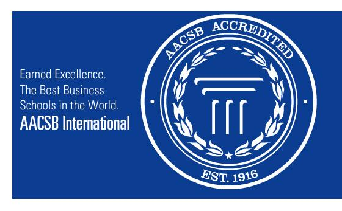
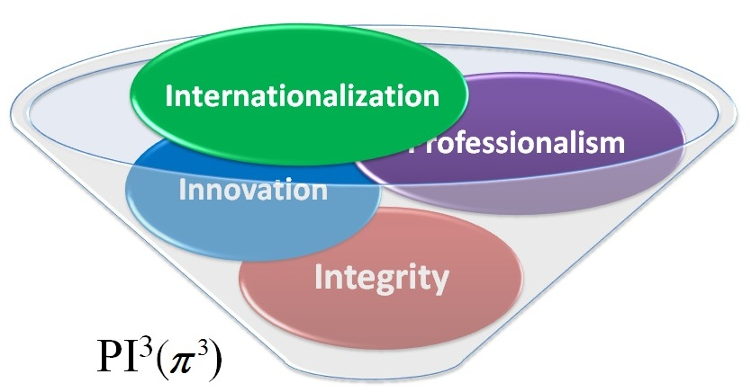

|
|
AACSB
AACSB(Association to Advance Collegiate Schools of Business)
國際商管學院促進協會聯盟，旨在推動管理教育的持續改進，並針對通過其評鑑標準的商學院頒發認證 |

|
使命目標

本系使命目標為PI (π)3：專業素養 (Professionalism)、誠信正直(Integrity)、創新
研發(Innovation)與國際視野(Internationalization)。本系將以此四大目標為發展方向，除了專業
知識與技能的養成與累積外，需建立專業素養與道德操守，提升學生的會計倫理道德觀念，並培養立足台灣、
放眼區域、胸懷世界之具備競爭力與判斷力之人才並藉此擴展學生的視野，促進其創意與整合能力，以期學生
擁有解決問題的能力。
Educational Objectives
- Undergraduate Program
- Educate students with business concepts in various courses including accounting,finance, economics, statistics, management, and information systems.
- Motivate students with innovative thinking through learning different disciplines.
- Help students appreciate the importance of business ethics and corporate social responsibility in accounting profession.
- Prepare students to meet the qualification of top-tier accounting firms and multinational corporations.
- Masters Program
- Educate students with appropriate research capability, analytical skills, and integration between accounting and information systems.
- Help students appreciate the importance of business ethics and corporate social responsibility in accounting profession.
- Motivate students with innovative thinking and cutting-edge knowledge offered by outstanding practitioners and academicians.
- Prepare students to meet the qualification of top-tier accounting firms and multi-national corporations.
- Ph.D.Program
- Educate students with advanced accounting theories to prepare them for successful careers in accounting research and education.
- Stimulate students’ interests and creativity in research through short courses and seminars offered by distinguished scholars from major universities and research institutions.
- Prepare students’ capability in teaching, research and innovative thinking.
- Encourage students to participate in international conferences, workshops, and study-abroad programs sponsored by the government.
|